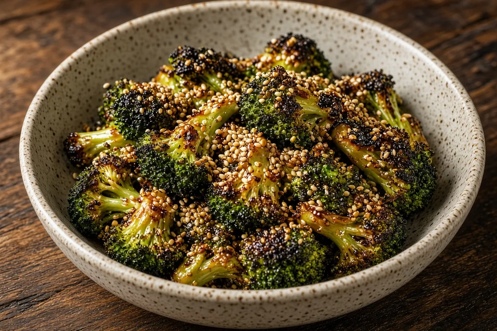

Sesame Broccoli
Broccoli roasted until the tips are crisp and charred, then tossed in a warm garlic, soy, and toasted sesame glaze. A quick side that pairs with bulgogi bowls and other Asian-style dinners.

6 servings
By
Yield: 6 servings
Prep:
Cook:
Total:
Difficulty: Easy
Ingredients
- 1 1/2 lb broccoli florets (about 2 large crowns), cut into 1 1/2-inch pieces
- 2 Tbsp vegetable oil
- 1/2 tsp kosher salt
- 1 Tbsp sesame seeds
- 1 Tbsp toasted sesame oil
- 2 cloves garlic, minced
- 1/4 tsp red pepper flakes, optional
- 2 Tbsp low-sodium soy sauce
- 1 Tbsp rice vinegar
- 1 tsp honey
Instructions
- Heat the oven to 425°F with a rack in the middle. Toast the sesame seeds in a small dry HexClad skillet over medium heat 2 minutes, shaking the pan, until golden. Tip them onto a plate and wipe out the skillet.
- Toss the broccoli with the vegetable oil and kosher salt on a large rimmed sheet pan and spread it in a single layer, cut sides down where you can. Roast 16 to 20 minutes, flipping once halfway, until the stems are fork-tender and the tips are deeply browned and crisp.
- While the broccoli roasts, warm the sesame oil, garlic, and red pepper flakes in the small HexClad skillet over medium heat 30 seconds, just until fragrant; do not let the garlic brown. Add the soy sauce, rice vinegar, and honey and simmer 30 seconds, until slightly syrupy.
- Toss the hot broccoli with the sauce right on the pan, pile it into a serving bowl, and sprinkle with the toasted sesame seeds. Serve warm.
Notes: Doubling for 12 (as with the bulgogi bowls)? Use 3 lb of broccoli on two sheet pans, one rack in the upper third and one in the lower third, and swap their positions halfway through; crowded broccoli steams instead of browning. Serve the same day for the best crunch.